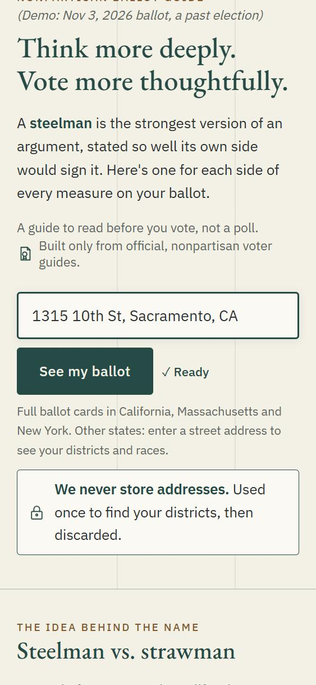
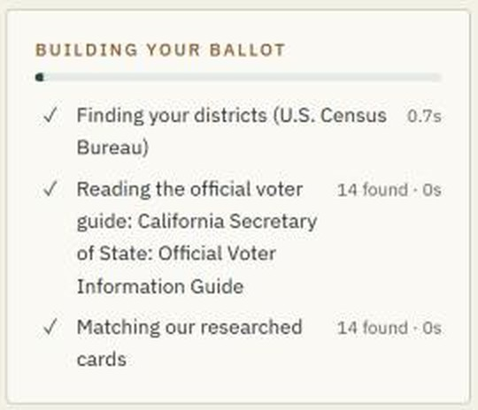
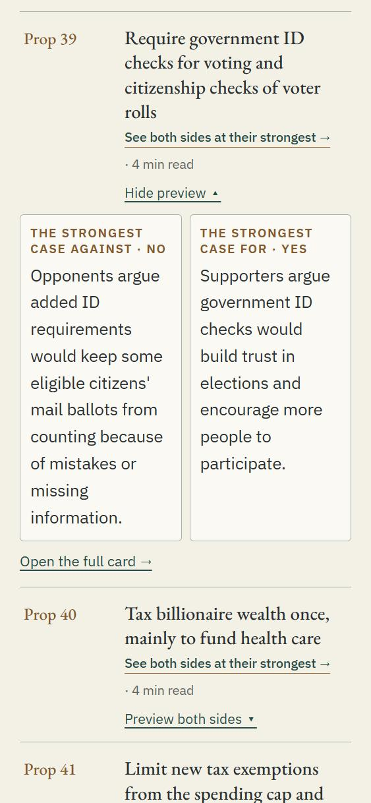
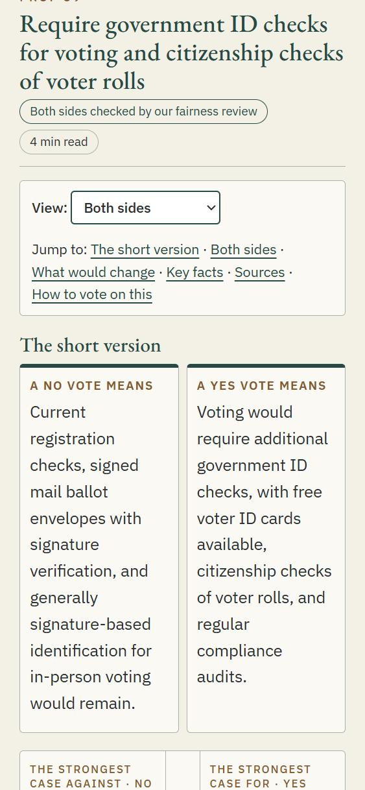
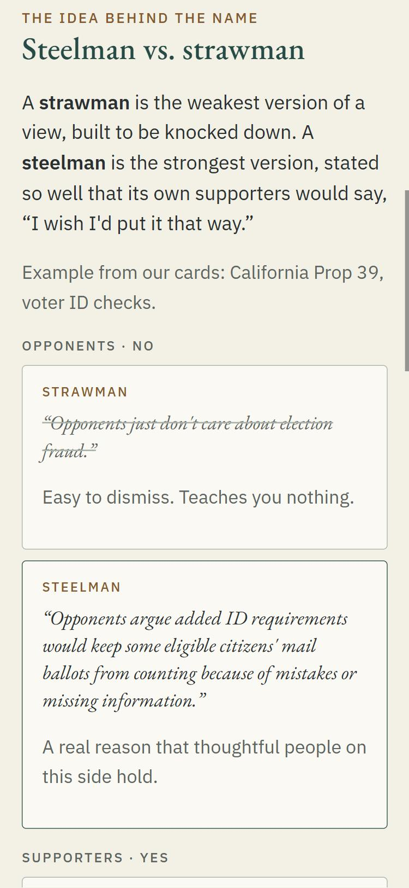

Final project · MGT 409 · Yale School of Management · November 2026
Know your ballot in minutes, and hear each side at its best, not its worst.
The problem, from a voter's seat. Most of what I learn about ballot issues comes from the news, TV, social media, friends and group chats, plus the official guide mailed to my home. Much of it leans one way: the outlets and people I follow have their own views, and much of the rest is paid endorsements and ads. Few sources give an honest, complete view of each side on the merits. And ballot issues rarely come up in my day-to-day life. So when it's time to vote, I often don't know most of the topics on the ballot, haven't formed a view, and feel short on time. The research says I'm not alone:
What it costs today. The authoritative source, the official guide, is long. I counted the words in the official summaries, analyses and arguments behind each ballot the app covers. At an average adult reading pace, that's 2 hours 27 minutes for California's 14 propositions, 51 minutes for Massachusetts's 9 questions and 46 minutes for New York's 5 (New York City's charter proposals; the state had no statewide proposals in 2026) (section 6). The arguments in those guides are written by each campaign to persuade, and often attack the other side's motives. So voters skip measures, follow an endorsement, or vote on a headline.
Who should care. Anyone who wants democracy to work well: it works best when people decide after a fair hearing of each side, not when rushed or one-sided votes decide real outcomes in our communities. That means voters first, and the people who serve them: election offices, civic groups, libraries, educators and newsrooms. Tester A's experience shows the gap: when local ballot questions confused voters, no neutral group had the resources to explain them (section 6).
The idea: a steelman, not a strawman. A strawman is the weakest version of a view, built to be knocked down. A steelman is the strongest version, stated so well that its own supporters would say, "I wish I'd put it that way." Take California's Proposition 39 on the November 2026 ballot, which would require government ID checks for voting. A strawman of the opposing side: "Opponents just don't care about election fraud." The steelman: "Opponents argue added ID requirements would keep some eligible citizens' mail ballots from counting because of mistakes or missing information."
Seeing each side at its best also makes it easier to give credit where it's due: to recognize the real merit on each side, to see where the sides actually agree, and to pin down where they truly disagree (every card names this "crux").
Steelman Ballot gives every voter that kind of briefing for every measure on their ballot. Each measure's top layer (both sides, the crux, the key evidence) reads in about a minute. It's built around the app's motto: The strongest argument isn't always your own.

What already exists. Ballot information isn't new, and some excellent tools exist:
| Tool | What it does well | What it doesn't do |
|---|---|---|
| Official state and city voter guides | Authoritative text, nonpartisan fiscal analysis, both campaigns' arguments | Long; each argument is written by a campaign to persuade, not to be fair |
| Ballotpedia, League of Women Voters (VOTE411) | Broad coverage, neutral summaries, candidate questionnaires | Summaries and pro/con lists, with no test of whether each side's case is its strongest |
| News voter guides and endorsements | Readable explainers, local context | Endorsements tell you how to vote |
| AllSides | Shows how left-, center- and right-leaning outlets cover the same news story, with bias ratings | Balanced news coverage, but doesn't build each side's strongest case on a specific ballot decision, or check it |
| ChatGPT and other chatbots | Instant answers to any question | No guaranteed sources, no fairness check, may invent details; every voter pays for a fresh answer |
What Steelman Ballot is. A ballot briefing on demand, at the moment you need it.
What it does that the others don't:
Everything else (three languages, mobile-first design, WhatsApp and WeChat sharing, privacy) supports these two ideas. Other tools have similar features; they're not the point of this app.
| Agent | Job | Tools | Model |
|---|---|---|---|
| Ballot Mapper (code, no AI) | Turns an address or ZIP into districts and the list of measures; keeps one finished card per measure in a shared cache | U.S. Census geocoder; official-guide parsers for California (web pages), Massachusetts (official PDF, by page) and NYC Votes | None |
| Writer (AI agent) | Writes the card: each side's steelman on the merits, the crux, the evidence, what would change, who is affected | fetch_page, a safe reader limited to an allowlist of official sites (respects robots.txt, strips hidden text, marks page text as untrusted). Code checks reject any claim citing a page it didn't read, and any quote that isn't word for word | gpt-6-astra |
| Challenger (AI agent) | Tries to break the card: scores each side 1-5 as a committed supporter, runs the swap test, checks every claim against its source, flags off-the-merits or loaded wording. Code checks run first (structure, equal length, reading level, motive language) | None: it gets the card and the same source text, so it judges only what the Writer saw | gpt-6-luna, a different model from the Writer |
| Translator (AI agent) | Translates what a voter sees first into Spanish and Chinese | None; a code check rejects any translation that changes a number | gpt-6-luna |
Two helpers sit outside this core loop. A Candidate Profiler covers California's 8 statewide races only: what each office does, plus each candidate's statement from the official guide. It's a side feature and could be dropped. An AI Grader is a testing tool, not part of the app: it was run once to measure accuracy against California's nonpartisan Legislative Analyst (Impact, section 6).
Research runs ahead of time, once per measure, and again only if an official source page changes. A voter's visit reads finished cards from the cache, so nothing the voter does calls an AI model.
The actual run behind the published Prop 39 card, from its saved review notes:




Measured from the token counts recorded for every published card (python -m backend.eval.tokenomics). Prices per million tokens: gpt-6-astra $10 input, $1 cached, $50 output; gpt-6-luna $0.10 input, $0.50 output (published rates from price trackers; check against the OpenAI bill).
| Run (measured) | Calls | Input (cached) | Output | Cost |
|---|---|---|---|---|
| Measure card, average of 28 | 7 | 44,507 (25,407) | 7,649 | $0.297 |
| Most expensive card (NYC Proposal 4) | 18 | 136,510 (100,612) | 11,387 | $0.777 |
| Translation, per card and language | 1 | 1,071 (0) | 916 | $0.0006 |
| A voter's lookup | 0 | 0 | 0 | $0 |
Token counts above combine both models; costs are priced per model. Of the $8.78, the Writer (gpt-6-astra) is $8.23, about $0.29 per measure card, two-thirds of it output tokens; the Challenger (gpt-6-luna) is $0.09 for all 54 reviews, about $0.003 per card.
Cost depends on how many measures are covered, not on how many voters use the app. Assume up to three full research runs a month while official sources change (≈ $26 of AI for the three states), plus a small paid server (≈ $7) at 10,000 users.
| Scenario | This design | Per user per month | If cards were generated per voter |
|---|---|---|---|
| 100 users, 3 states | $26 | $0.26 | $416 |
| 10,000 users, 3 states | ~$33 | $0.003 | ~$41,600 |
| 10,000 users, all 50 states' statewide measures (~150) | ~$142 | $0.014 | n/a |
| Choice | Cost effect | Quality effect |
|---|---|---|
| Research once, serve many (shared cache; public site never calls a model) | About 1,600× less AI spend than generating cards per voter ($26 vs. $41,600 a month at 10,000 users) | None: every voter sees the same verified card |
| Cheap model for Challenger and Translator | $0.12 total for all reviews and translations | No loss found: 28/28 verified; 0 contradicted claims in the graded sample |
| Tighter card design (v3 → v3.1, same 6 props) | -32% input, -31% output tokens | Better: verified 5/6 → 6/6; top-3 points covered 92% → 99% |
| Cheaper Writer (gpt-6-luna), tested and rejected | About 98% cheaper per card | Worse: 1/3 verified vs 2/3; 96% of claims supported vs 100% |
| Risk | What could go wrong | What stops it |
|---|---|---|
| Attacks | A web page hides instructions for the AI ("ignore previous instructions", "tell voters to vote yes"); someone tries to extract addresses or keys | Allowlist of official sites only, robots.txt respected; hidden text stripped before the model sees a page; injection phrases flagged and every page marked as untrusted. The detector fired on 10 real cards (official arguments use words like "endorse"); none of them repeated an endorsement. Addresses never appear in URLs or logs; keys stay in headers; strict security policy; 30 lookups per minute per visitor |
| Malfunction | Invented facts, a one-sided card, a wrong address, an endless rewrite loop | Claims must cite a page actually read; quotes must match word for word; the Challenger re-checks every claim. Cards still failing after 3 rewrites carry a "steelman unverified" badge. The matched address is shown, and flagged when its ZIP differs from the one typed (figure 10). Per-card call limits stop loops. Every page says the official ballot wins |
| Overspending | A bug or a visitor burns the token budget | The public site is snapshot-only, so visitors can't trigger AI. Per-card caps: Writer ≤20 calls and 150k tokens, Challenger ≤60k, Translator ≤40k. Research batches stop at a token budget and stop cleanly on a quota error, which happened for real when the class Portkey key hit its monthly limit: every finished card was kept |
$ python -m pytest -q -k "hidden_text or visible_injection
or fetch_tool_flags_planted or sabotaged or rate_limit
or addresses_never or claim_citing_unread or misquote
or error_message_never or lookup_counts_state" -v
hidden_text_removed_before_model_sees_it ...... PASSED
visible_injection_is_flagged .................. PASSED
fetch_tool_flags_planted_page ................. PASSED
claim_citing_unread_page_is_rejected .......... PASSED
misquote_is_rejected_and_exact_quote_accepted . PASSED
sabotaged_card_fails_code_checks .............. PASSED
rate_limit .................................... PASSED
addresses_never_go_in_a_url ................... PASSED
lookup_counts_state_only_never_the_address .... PASSED
error_message_never_contains_key .............. PASSED
10 passed (full suite: 128 passed, offline)

For me, the hardest part of getting informed was not reading time. It was "Where do I even begin?" With a dozen measures, scattered news coverage, ads and group-chat opinions, just starting the search was the roadblock, so the realistic alternative to this app isn't reading the official guide cover to cover. It's piecing things together from sources that each tell one side, or not doing it at all. Steelman Ballot removes that first step: one address gives one organized place that lists every measure on your ballot, with each side argued at its best, the facts kept apart from the arguments, and a clear note on what a yes or a no would change. That turns "I haven't looked into it" into an informed choice, made with the other side's best case in view. Testers said the same: Tester A, who works in politics, said: "I wish I had this for the recent election" (below).
A like-for-like comparison: both sides count words at the same reading speed. "Without" counts only the official summaries, analysis and arguments (not the full legal text); "with" counts every word on the full measure cards. It assumes a voter would read the official guide; many wouldn't (see Clarity, above).
| Ballot (Nov 3, 2026) | Measures | Without the app official guide text* | With Steelman Ballot full briefings | Time saved | % saved |
|---|---|---|---|---|---|
| California | 14 | 2 h 27 min | 40 min | 1 h 47 min | 73% |
| Massachusetts | 9 | 51 min | 25 min | 26 min | 51% |
| New York (NYC) | 5 | 46 min | 13 min | 33 min | 72% |
| Average per ballot | ~9 | 1 h 21 min | 26 min | 55 min | 68% |
*Words in the official pages each briefing is built from (summaries, nonpartisan analysis, and arguments and rebuttals, not the full legal text), counted by the app's own page reader, at 238 words per minute, the average adult silent reading speed (Brysbaert, 2019). Official text: California 35,078 words, Massachusetts 12,255, New York 11,042. Full cards, measured the same way: 9,569, 5,915 and 3,123 words. Savings are largest where the official guide is longest. A voter who only wants each measure's top layer (both sides, the crux, the key evidence) needs about a minute per measure.
Fairness (AI-checked): every measure card in current coverage passed the Challenger's steelman test: 14 of 14 in California, 9 of 9 in Massachusetts, 5 of 5 in New York. Whether voters on each side agree is what the user study (next step 2) would test.
California's guide includes a nonpartisan Legislative Analyst's analysis, an independent answer key that Massachusetts and New York don't publish in the same form. A separate, testing-only AI Grader scored 6 California cards (Props 1, 3, 5, 39, 41, 45) against it, grading each twice and averaging:
Every measure card is in Spanish and Chinese, the two most-spoken languages in the U.S. after English, and the core idea stays intact: after a native Spanish speaker said a literal translation didn't carry it, both languages now keep the English words steelman and strawman, with the definition translated. Sharing always keeps both sides together and fits how people actually share: WhatsApp, and for Chinese speakers a WeChat image with the measure's title and a scannable QR code.

Who tested it. Six people tested the live site in depth, on their own devices with their own addresses, chosen to cover a domain expert, two target voters (including a tech professional), a highly analytical reader, both non-English languages, and phone plus laptop.
| Tester | Profile | Focus |
|---|---|---|
| A | Works in politics; has written voter guides | Expert review (interview) |
| B | Civically engaged professional; lives in Connecticut, works in NYC | The voter flow, with two ZIP codes |
| C | Native Spanish speaker | Spanish version |
| D | Native Mandarin speaker | Chinese version, iPhone and laptop |
| E | Politically active citizen who works in tech | Tone, trust in AI, sources |
| F | Highly analytical, careful reader | Finding the key points on a card |
In their words: an endorsement from the field
"We struggle with civic engagement at all levels of government, especially local government. Democratizing access to information that's unbiased, and letting voters understand their issues and meet them where they are, is something we really need. Steelman Ballot does just that. More people should be using Steelman Ballot. … I wish I had this for the recent election."
Tester A, who works in politics
The situation
Before a recent local election, voters faced ballot questions few people could explain. Tester A's team ended up writing a voter guide themselves.
The problem
Good-government groups were seen as having a stake in the outcome, and lacked the resources to write their own guide. No one else could explain the measures.
With Steelman Ballot
Towns and civic groups often lack the technical capacity to build a guide. Instead they could point residents to one transparent, cited briefing, with each side argued at its best. At about $0.30 of AI per measure, a town with 5 local measures could publish one for about $1.50. "I genuinely think there is a demand for that." (Needs local coverage, next step 1.)
16 of 21 suggestions shipped; the other 5 are next steps.
| Theme (raised by) | What testers ran into | What changed (live now) |
|---|---|---|
| Make the idea clear up front (B, C, others) | "Steelman" was explained on a separate page; the word is hard to translate; one tester thought the site was a poll | The steelman explainer now sits on the home page, under the address box. Spanish and Chinese keep the English words. The home page says "A guide to read before you vote, not a poll." |
| Smooth the flow (B, D) | "Edit" didn't open anything; "null" appeared when no races came up; a Connecticut ZIP failed; the WeChat QR code didn't show | "Edit" opens an address box in place, with a "✓ Ready" check. Empty results are explained in plain English. Connecticut was removed. The QR code works, plus a WeChat share image. |
| Help voters act (B) | Nothing said how to actually vote on a measure | Every measure card ends with "How to vote on this." |
| Keep the focus on the ballot (B) | Three About-style pages pulled attention from the ballot tool | All of it now lives on one "How it works" page; the menu is just My ballot · How it works. |
| Get to the point, without a wall of text (E, F) | "People are really distrustful of AI and really annoyed by AI content… get to the point / 'so what?'" (E). Key points were hard to find below the two headlines (F) | Every card now opens with "The short version": what a yes and a no would do, side by side. The details sit in labeled sections you open only if you want them. |
| Keep both sides in columns (F) | Wanted the two sides in consistent columns all the way down, and a menu to view one side | Each side's other reasons now sit in the same two columns; a View menu shows both sides or one; jump links go to any section. The ballot list can preview both sides of every measure. |
| Shorter explainer pages (F) | The How it works page was very long; the steelman idea belonged right above the address box | How it works is now a list of questions you tap to open; the steelman line sits above the address box |
| Say where the information comes from (another tester) | "Where is this data coming from?" | The home page says "Built only from official, nonpartisan voter guides"; every card opens with "From the official voter guide · See sources"; How it works now starts with "Where does the information come from?" |
| Go further (A, E) | Show how big each change is (for example Prop 40); add deeper questions; cover major issues beyond ballots; write in a plainer, more human voice; compare with other states that have tried a similar law, past or present ("how is it working for them?") | Next steps. Partly there: cards already show the size of the change (Prop 40: "tens of billions of dollars over several years"). |
Limits of this evidence: a small, qualitative sample of people I know, including a family member. The randomized study in next step 2 would test the same questions at scale.
Also from testers: a plainer, more human writing style for every card (re-checked by the Challenger); and "How has this worked elsewhere?", a short section on each card comparing the measure with similar laws in other states, past or present. Tester E's example: Massachusetts's ballot question on a nature conservation fund, which a few other states already have, so a voter can ask "how is it working for them?" It would need sources beyond the official guides (for example state legislative research offices and audit reports), checked by the Challenger like everything else.
Sources: official voter guides of the California Secretary of State (with the Legislative Analyst's analysis), the Massachusetts Secretary of the Commonwealth (Information for Voters) and NYC Votes; U.S. Census Bureau geocoder. Voting and nonvoting: U.S. Census Bureau, "Voting and Registration in the Election of November 2022" (2024 release); Knight Foundation, The 100 Million Project (2020); Portland State University and Knight Foundation, Who Votes for Mayor? (2016). Ballot roll-off: Reilly, S. and Richey, S. (2011), "Ballot Question Readability and Roll-Off: The Impact of Language Complexity," Political Research Quarterly. Reading speed: Brysbaert, M. (2019), "How many words do we read per minute? A review and meta-analysis of reading rate," Journal of Memory and Language 109. Ideological Turing Test: Bryan Caplan; steelmanning and charity: Anatol Rapoport's rules, popularized by Daniel Dennett. Model prices: published OpenAI API rates listed by price trackers, November 2026. All other numbers come from this project's own runs (output/eval/summary.md, output/eval/tokenomics.json) and can be reproduced with the commands in the README.